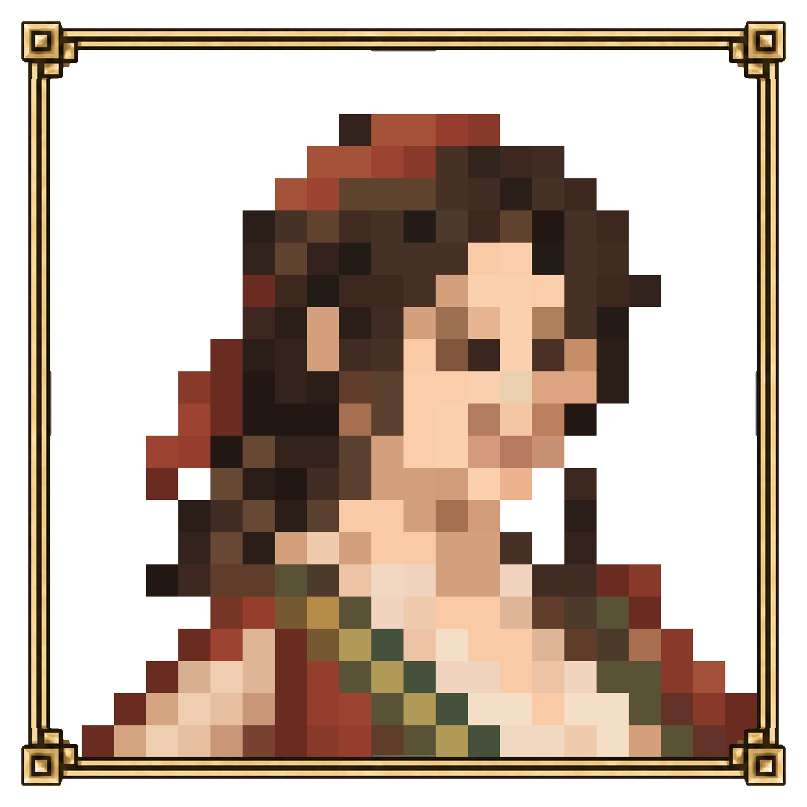

<!doctype html><html lang="ko">
<script type="module" crossorigin src="./assets/index-D_GYmyDA.js"></script>
<meta charset="utf-8"><meta name="viewport" content="width=device-width,initial-scale=1"><link rel="icon" href="data:,"><title>쥘리아 크리스테바 · 외형 시안</title>
<style>@font-face{font-family:Stillness;src:url(./assets/Pretendard-Regular.subset-BZqc2FCe.woff2)}*{box-sizing:border-box}body{color:#dbcdb5;background:#201e1a;margin:0;font-family:Stillness,serif}header{border-bottom:1px solid #665237;padding:22px 24px 15px}h1{margin:0 0 8px;font-size:24px;font-weight:400}p{color:#afa28e;margin:5px 0;font-size:14px}nav{gap:8px;margin-top:18px;display:flex}button,a.button{color:#ddd0b9;font:inherit;cursor:pointer;background:#2b261f;border:1px solid #86704d;padding:9px 15px;font-size:14px;text-decoration:none}button[aria-pressed=true]{background:#564731;border-color:#d2b67c}#model{touch-action:none;outline:none;width:100%;height:calc(100svh - 225px);min-height:360px}canvas{width:100%;height:100%;display:block}.controls{flex-wrap:wrap;justify-content:center;gap:8px;padding:10px;display:flex}.picture{text-align:center;padding:20px;display:none}.picture img{object-fit:contain;max-width:100%;max-height:76svh}.hint{text-align:center;padding:0 10px 12px;font-size:13px}footer{text-align:center;color:#9b8e7d;padding:12px;font-size:12px}#error{color:#e1a48a;padding:20px;display:none}@media (width<=500px){header{padding:17px 16px 12px}h1{font-size:21px}nav{margin-top:13px}#model{height:62svh;min-height:380px}button,a.button{padding:9px 12px}}</style>
<header><h1>쥘리아 크리스테바</h1><p>활달한 상인 · 외형 시안</p><nav aria-label="보기"><button data-tab="model" aria-pressed="true">3D 모델</button><button data-tab="sketch" aria-pressed="false">전신 스케치</button><button data-tab="portrait" aria-pressed="false">프로필</button></nav></header>
<main><section id="model-panel"><div id="model" tabindex="0" aria-label="인물 360도 보기. 드래그 또는 좌우 방향키로 회전"></div><div class="controls"><button data-view="front">정면</button><button data-view="quarter">비스듬히</button><button data-view="rear">뒷모습</button><button id="close">얼굴 확대</button></div><p class="hint">드래그하여 돌려보실 수 있습니다.</p></section><section id="sketch-panel" class="picture"></section><section id="portrait-panel" class="picture"></section><p id="error"></p></main><footer>원화의 머릿수건·땋은 머리·녹색 조끼를 이어 만든 모습</footer></html>
